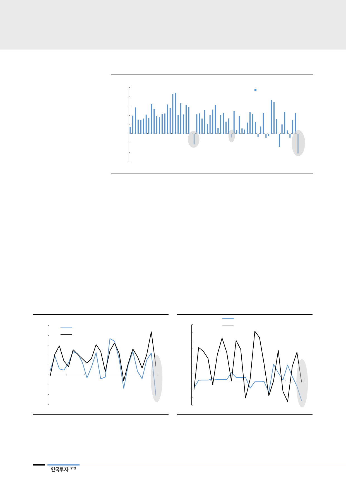

[그림 8] DRAM산업 총수요 증가율 추이
(% QoQ)
25
20
15
10
5
0
(5)
(10)
(15)
1Q03
1Q05
1Q07
1Q09
1Q11
자료: 한국투자증권
1Q13
DRAM 총수요 증가율
1Q15 1Q17
매크로 충격은 business
application에 더 크게
나타나
지난 4분기 매크로 충격의 영향은 컨슈머 application보다는 business
application에 더 크게 나타났다. Business application 비중이 상대적으로 높은
디램이 낸드보다 더 크게 나타났고, 디램 application 중에서도 서버디램 수요가
모바일디램 수요보다 더 크게 영향을 받은 것으로 나타났다. 디램과 낸드를 비교
해 보면 지난 4분기 디램 수요는 전분기대비 11% 감소해 전에 없던 부진한 수
요를 보인 반면 낸드 수요는 5% 증가해 충격이 크게 두드려지지는 않았다. 디램
중에서 서버디램의 수요는 전분기대비 33%, 전년대비 13% 감소한 반면 스마트
폰용 모바일디램은 전분기대비 1% 감소, 전년대비는 12% 증가했고 채용량 증가
율도 flat으로 과거 4분기 계절성보다 오히려 더 나은 모습을 보였다. 매크로 충
격에 business 영역이 더 민감하게 반응을 해 재고를 줄이는 모습이 나타난 것으
로 볼 수 있고, 향후 수요는 실제 수요 수준으로 회복할 것으로 예상할 수 있다.
[그림 9] 디램, 낸드 수요 증가율 추이
(% QoQ)
25
20
DRAM 수요 증가율
NAND 수요 증가율
15
10
5
0
(5)
(10)
(15)
1Q13
1Q14
1Q15
1Q16
자료: 한국투자증권
1Q17
1Q18
[그림 10] 서버디램, 모바일디램 수요 증가율 추이
(% QoQ)
35
30
25
20
15
10
5
0
(5)
(10)
(15)
1Q13
1Q14
서버디램 수요 증가율
모바일디램 수요 증가율
1Q15 1Q16 1Q17 1Q18
자료: 한국투자증권
6